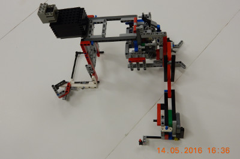

When designing our base robot, we establish criteria at the outset, such as desired footprint, height, balance, drive train, sensors to be used, user interface, etc. to arrive at a working prototype. We also strive to design and build a base robot which is robust and which features a frame around the chassis to provide structural rigidity as well as means to square up against walls and mission models. Before creating a prototype base robot, we prepare some high level rudimentary drawings on a flip chart which we use to stimulate discussion amongst team members. Once the team settles on a high-level base robot design, we use LDD or ML CAD to create a 3D-drawing of the prototype. Doing so allows us to be as efficient as possible with regard to type and quantity of pieces used. Based on the final drawing, we construct our prototype base robot using LEGO pieces/elements. After creating a working prototype, we design attachments keeping in mind that these attachments need to be easy to install and remove, robust, and both passive and multi-purpose whenever possible. From testing the prototype base robot and the attachments, we make revisions to our work in order to combine and speed up missions and increase repeatability to achieve maximum efficiency. By the end of the season, our attachments will often be in their fifth or sixth iteration.
When first designing our robot we wanted to make sure that all the light/color sensors behaved similarly. Color sensors each return a small differences in readings because of variations in manufacturing. For example, if you were to place two different color sensors on the same black line, each would return different values for light intensity. Sometimes the difference may be significant. To make sure that all our light sensors had about the same reading we completely shielded ten color sensors to eliminate the variable of ambient light and recorded the reading for each of the color sensors on black, white, and green. We then found the four color sensors which have the closest reading to each other and used those four color sensors on the robot.
We have found the the green EV3 move blocks (Move Tank and Move Steering) are unreliable. Although they have a built in PID feature, they still do not move the robot in a straight line. To test this, we set a designated starting spot for the robot and then we ran it until it hit the wall on the other side of the table. We repeated this dozens of times and found that each time it would end up in a different spot on the other side of the table (up to one inch away from the previous run). Each time it would be up to one inch away from the previous run. Then, we made our own error-corrected move block (which you can read about in the programming section of this website). We conducted the same experiment using our block and found that there was much less error and the robot would consistently end up in the same position on the table.


Our base robot is VERY Robust and compact with a frame for strength. We also have four light sensors, for MAXIMUM FLEXIBILITY, with shielding from ambient light. The robot has sliders, which are steering neutral, and has narrow and hard wheels for more accuracy in both straight movements and turns. However, we sacrifice some accuracy due to our large diameter wheels which amplify the error associated with the drive motor rotation sensors. Our robot also has one bumper on the front and the back but they are both connected by a single touch sensor using a series of axles running along the robot's frame.
| Name of Attachment | Description | Picture |
|---|---|---|
| Factory Attachment | This is a completely passive attachment that drops a methane loop into the house and collects the toy plane in the large packaging from the house. When the robot pushes the attachment against the house an arm falls down to the side placing the minifigure into the sorting zone for the R10 leniency bonus and the arm also hooks on to the plastic bag. When the robot drives back to base the arm knocks over the demolition building and collects all of the pieces including the valuables. This mission scores a total of 285 points. |  |
| Big Mission Attachment | This is a completely passive attachment. This attachment leaves base, pushes the stick that activates the compost mission, leaves that area of the mat, collects the methane loops, places the windshield into the car, retrieves the toy plane and then returns to base. In order to push the stick that activates the compost mission, there is a funnel that lines the robot up with the mission model. It then pushes into the mission model, pushing the flat surface on the robot into the stick, leaving behind a container, connected by a string, that will collect the compost disk. The attachment then repositioned to where the car and methane loops are. Using a funnel it directs the car. It then presses into the wall. When the robot hits the wall with the flat surface on the attachment it drops the windshield into the car, it also hits an axle which, using an elastic band mechanism, hits a flexible LEGO stick which collects the methane loops. The robot then drives to the toy plane, turns, and then retrieves the toy plane by keeping it in the funnel that was used in the earlier mission. It then returns to base with (maximum): 2 methane loops, 1 toy plane and the compost disc. This mission scores a total of 265 points. |  |
| Sorting Attachment | This attachment's main purpose is to put all of the beams we have collected into the sorter and then to spin the wheel to sort the bars into the appropriate bin. This attachment featurs a conveyor belt that lifts all of the beams onto the sorter laterally so that they can be easily sorted. Using the same motor this attachment uses a series of gears and a chain to spin the wheel on the sorter allowing for maximum efficiency. |  |